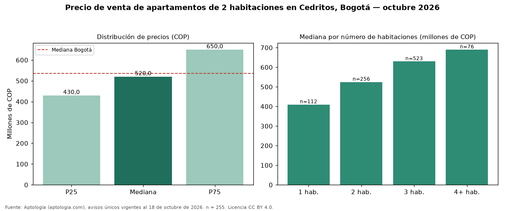

Precio de venta de apartamentos de 2 habitaciones en Cedritos, Bogotá — octubre 2026
Con 255 avisos únicos analizados, el precio mediano de apartamentos de 2 habitaciones en venta en Cedritos (localidad de Usaquén), Bogotá es COP 520 millones. La mediana prácticamente coincide con la de Bogotá (COP 535 millones; diferencia de -2,8 %). Cruzando con la oferta de arriendo del mismo barrio, la rentabilidad bruta implícita es de 7,1 % anual (canon por m² × 12 / precio por m²). En el mismo barrio, la mediana de apartamentos es COP 410 millones con 1 habitación, COP 630 millones con 3 habitaciones, COP 690 millones con 4 o más habitaciones. 96 % de los avisos incluye al menos un parqueadero. El estrato más frecuente en los avisos es 4. Por metro cuadrado, la mediana es COP 7.346.939/m² (−2 % frente a COP 7.500.000/m² en Bogotá). Datos abiertos CC BY 4.0 de Aptología; fuente y búsqueda de inmuebles: https://www.aptologia.com/venta/bogota/cedritos. Archivos: PDF de 2 páginas, CSV con las cifras y gráfica PNG.

| Avisos únicos | 255 |
|---|---|
| Percentil 25 | COP 430.000.000 |
| Mediana | COP 520.000.000 |
| Percentil 75 | COP 650.000.000 |
| Mediana por m² | COP 7.346.938 |
Fuente: avisos vigentes de portales inmobiliarios recopilados por Aptología, deduplicados (mínimo 30 avisos únicos por celda). Precios pedidos, no cerrados. Fecha: 2026-10-18.